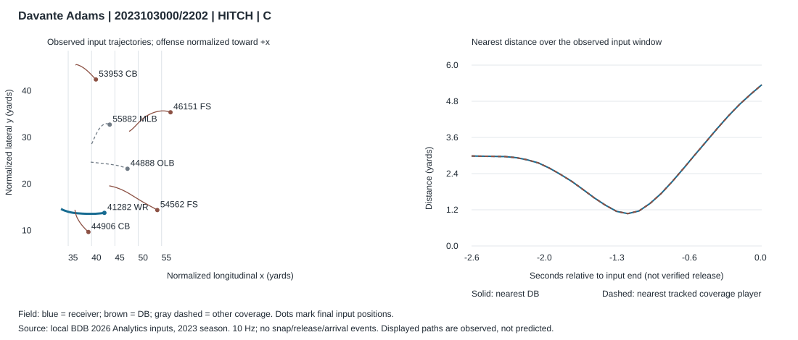
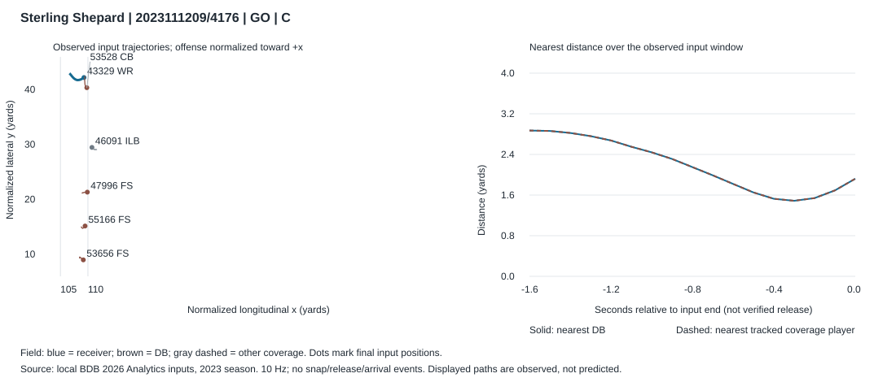
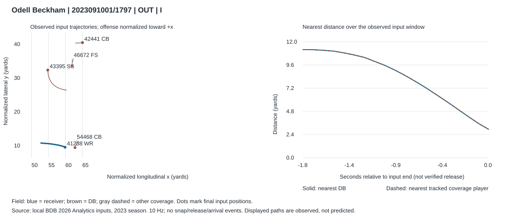
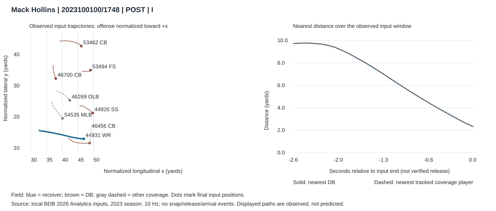
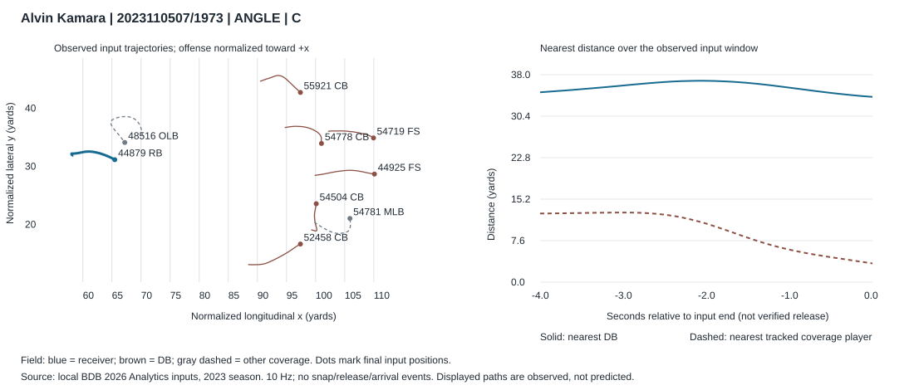
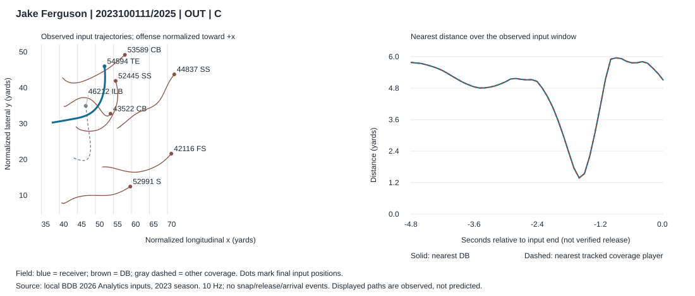

2023 season · local BDB 2026 Analytics · professor-feedback steps 1–4
Input end is a timing proxy, not verified release. Distances describe supplied coverage players. These are descriptive comparisons, not receiver-skill rankings.
Source: Local official BDB 2026 Analytics input_2023_w01..w18.csv + supplementary_data.csv. This run uses all 18 available 2023-season weekly input partitions.
• 4,880,579 tracking rows; 14,108 plays; 272 games.
• 64,752 receiver-play observations; 64,746 satisfy summary eligibility.
• 38,002 eligible WR routes; 8,611 eligible WR targets.
• Input data has no snap, release, arrival, football trajectory, or complete all-22 event tracking. The last input frame is only a release-adjacent boundary proxy. A true snap-to-throw mean and arrival separation cannot be reported from these files.
• Existing supplementary route labels describe the targeted receiver only. Never transfer them to other route runners.
Nearest DB = minimum Euclidean x/y distance to supplied defensive-coverage players with position CB/DB/S/FS/SS. Secondary comparison = nearest supplied defensive-coverage player, including linebackers. Neither identifies a coverage assignment or guarantees all 11 defenders are present.
Main metrics: input-end distance and arithmetic mean across all supplied input frames (10 Hz). Time averages may mix different observed window lengths. Player means give equal weight to eligible receiver-plays. Target and all-route summaries remain separate.
Eligibility: supplementary match, penalty flag N, receiver frames 1..input-end with no gaps, DB observed every frame, finite coordinates. Missing comparisons remain missing. Entire plays with nonfinite coordinates are excluded. Out-of-field positions are flagged and retained without clipping, as players may run out of bounds. Raw records and eligibility flags remain inspectable.
• Duplicate/null key checks passed weekly; weekly play partitions do not overlap.
• 0 unmatched receiver-plays; 0 incomplete input tracks; 6 incomplete DB windows.
• 0 nonfinite-coordinate rows; 0 out-of-field rows; 156 receiver frames without a DB.
• Independently recomputed nearest IDs and distances for 432 spread-out frame observations; maximum error 0 yards. Rotation invariance checked on one play per week; nearest-coverage distance <= nearest-DB distance checked for every comparable frame.
• WR all-route mean input-end DB distance: 3.735 yards.
• WR targets-only mean input-end DB distance: 4.168 yards.
• All-position targets: completed 6.683 vs incomplete 4.244 yards. These are unadjusted descriptive means, not causal effects or a prediction model.
• In 4,354 eligible target plays, the nearest tracked coverage player at input end was not a DB.
• Pass-result counts: {'C': 9736, 'I': 4032, 'IN': 337}. Incomplete passes remain in the analysis; interceptions remain a separate source label. No invented drop/throw-error labels.
• Player summary files include count, games, mean, median and quartiles. A 30-observation display threshold is an exploratory convention, not a reliability guarantee.
• Small-sample illustration: the largest unfiltered WR target mean belongs to Derius Davis, 11.471 yards across just 6 eligible targets. This is not evidence of the best route runner.
The dataset selects plays and players; do not generalize to all 2023 NFL routes. Untargeted receivers have no individual completion outcome. Each example is deterministically chosen for illustration, not representative proof. Four cases are nearest to their route/outcome median input-end separation; two highlight the largest DB-vs-coverage endpoint gap and most DB switches.
Next: discuss input-window timing with the professor, review the six trajectory examples, and decide whether existing target route labels suffice before attempting clustering. No clustering or success classifier was added.
Run `python scripts/run_separation_baseline.py` from the project root with NumPy and pandas installed. See `frames/week_*.csv.gz`, `receiver_play_metrics.csv`, `players_*.csv`, `target_context_summary.csv`, `weekly_quality.csv`, `cases/`, and `audit_and_results.json`. Existing source data and prior analyses are unchanged.
| player_name | receiver_plays | games | targets | mean_input_end_db_yards | median_input_end_db_yards | p25_input_end_db_yards | p75_input_end_db_yards |
|---|---|---|---|---|---|---|---|
| Derius Davis | 46 | 14 | 6 | 7.082 | 6.443 | 3.011 | 9.491 |
| Isaiah McKenzie | 35 | 11 | 7 | 6.032 | 5.450 | 2.664 | 8.630 |
| Ihmir Smith-Marsette | 32 | 10 | 5 | 5.797 | 4.866 | 2.405 | 8.195 |
| Kadarius Toney | 94 | 13 | 24 | 5.709 | 4.238 | 1.756 | 7.721 |
| KaVontae Turpin | 58 | 13 | 14 | 5.253 | 4.553 | 2.111 | 5.941 |
| Rondale Moore | 316 | 17 | 44 | 5.163 | 4.200 | 2.242 | 6.856 |
| John Metchie III | 116 | 15 | 26 | 4.850 | 3.882 | 1.945 | 6.724 |
| Wan'Dale Robinson | 238 | 15 | 62 | 4.816 | 4.188 | 1.986 | 6.447 |
| Richie James | 61 | 9 | 13 | 4.700 | 4.138 | 1.860 | 6.129 |
| Deebo Samuel Sr. | 276 | 15 | 67 | 4.665 | 3.118 | 1.687 | 6.553 |
| Rakim Jarrett | 36 | 10 | 5 | 4.580 | 3.620 | 1.803 | 6.414 |
| Jaxon Smith-Njigba | 320 | 17 | 64 | 4.537 | 3.679 | 1.758 | 6.026 |
| Keelan Doss | 48 | 4 | 10 | 4.515 | 3.693 | 1.928 | 6.216 |
| Rashee Rice | 251 | 16 | 74 | 4.452 | 3.842 | 1.915 | 6.231 |
| Kalif Raymond | 164 | 17 | 33 | 4.446 | 3.695 | 2.113 | 5.621 |
| Jerry Jeudy | 278 | 16 | 68 | 4.414 | 3.807 | 2.029 | 5.868 |
| Josh Downs | 324 | 17 | 81 | 4.400 | 3.396 | 1.781 | 6.228 |
| Jamison Crowder | 57 | 11 | 14 | 4.399 | 4.058 | 1.621 | 6.111 |
| Greg Dortch | 165 | 12 | 34 | 4.394 | 3.731 | 1.781 | 5.650 |
| Jamal Agnew | 113 | 10 | 17 | 4.335 | 3.392 | 1.624 | 5.811 |
| player_name | receiver_plays | games | targets | mean_input_end_db_yards | median_input_end_db_yards | p25_input_end_db_yards | p75_input_end_db_yards |
|---|---|---|---|---|---|---|---|
| Rondale Moore | 44 | 16 | 44 | 7.463 | 7.527 | 3.396 | 9.434 |
| Wan'Dale Robinson | 62 | 15 | 62 | 5.974 | 5.193 | 4.011 | 7.420 |
| Greg Dortch | 34 | 7 | 34 | 5.784 | 5.355 | 1.977 | 7.647 |
| Kalif Raymond | 33 | 14 | 33 | 5.768 | 5.310 | 3.905 | 7.859 |
| Allen Robinson | 40 | 15 | 40 | 5.665 | 4.919 | 3.426 | 7.770 |
| Jaxon Smith-Njigba | 64 | 17 | 64 | 5.570 | 4.761 | 2.180 | 8.300 |
| Deebo Samuel Sr. | 67 | 14 | 67 | 5.462 | 4.595 | 2.404 | 7.768 |
| Braxton Berrios | 30 | 13 | 30 | 5.312 | 4.336 | 2.609 | 6.692 |
| Josh Downs | 81 | 17 | 81 | 5.306 | 4.077 | 2.469 | 7.602 |
| Rashee Rice | 74 | 16 | 74 | 5.142 | 4.479 | 2.674 | 6.550 |
| Jerry Jeudy | 68 | 16 | 68 | 5.135 | 4.843 | 2.122 | 6.712 |
| Skyy Moore | 30 | 12 | 30 | 5.054 | 5.207 | 2.459 | 7.491 |
| Dontayvion Wicks | 48 | 14 | 48 | 4.939 | 4.548 | 2.284 | 6.445 |
| Nelson Agholor | 37 | 15 | 37 | 4.936 | 4.465 | 2.045 | 6.972 |
| Tyler Boyd | 77 | 17 | 77 | 4.853 | 4.054 | 2.331 | 7.298 |
| Curtis Samuel | 69 | 16 | 69 | 4.850 | 4.068 | 1.885 | 6.676 |
| Khalil Shakir | 39 | 15 | 39 | 4.796 | 4.445 | 2.733 | 6.729 |
| Tyler Lockett | 101 | 17 | 101 | 4.764 | 4.191 | 1.860 | 6.379 |
| Michael Wilson | 51 | 13 | 51 | 4.755 | 4.122 | 1.602 | 6.117 |
| Courtland Sutton | 83 | 16 | 83 | 4.747 | 3.736 | 1.862 | 6.397 |
C = complete; I = incomplete. Cases retain source route labels for targets only.
(15:00) (Shotgun) J.Garoppolo pass short right to D.Adams to LV 36 for 11 yards (A.Anzalone).

Nearest DB changed 0 times. Frame distances
(:10) (Shotgun) T.DeVito pass short left to S.Shepard for 2 yards, TOUCHDOWN.

Nearest DB changed 0 times. Frame distances
(2:04) (Shotgun) L.Jackson pass incomplete short right to O.Beckham.

Nearest DB changed 0 times. Frame distances
(1:37) (No Huddle, Shotgun) D.Ridder pass incomplete deep right to M.Hollins (Dari.Williams).

Nearest DB changed 0 times. Frame distances
(:04) (Shotgun) D.Carr pass short middle to A.Kamara to CHI 39 for 7 yards (T.Edwards).

Nearest DB changed 0 times. Frame distances
(:16) (Shotgun) D.Prescott pass short left to J.Ferguson pushed ob at DAL 41 for 12 yards (K.Dugger).

Nearest DB changed 5 times. Frame distances
First 10 computed receiver-frame records; raw source paths are listed above.
| game_id | play_id | frame_id | receiver_id | player_name | player_position | player_role | player_side | x | y | is_targeted | nearest_coverage_id | nearest_coverage_position | separation_coverage_yards | n_coverage_observed | nearest_db_id | nearest_db_position | separation_db_yards | n_db_observed | input_end_frame | seconds_to_input_end | week |
|---|---|---|---|---|---|---|---|---|---|---|---|---|---|---|---|---|---|---|---|---|---|
| 2023090700 | 101 | 1 | 53541 | Amon-Ra St. Brown | WR | Other Route Runner | Offense | 40.61 | 19.12 | False | 52546 | CB | 8.3499 | 5 | 52546 | CB | 8.3499 | 4 | 26 | -2.5 | 1 |
| 2023090700 | 101 | 2 | 53541 | Amon-Ra St. Brown | WR | Other Route Runner | Offense | 40.61 | 19.12 | False | 52546 | CB | 8.3825 | 5 | 52546 | CB | 8.3825 | 4 | 26 | -2.4 | 1 |
| 2023090700 | 101 | 3 | 53541 | Amon-Ra St. Brown | WR | Other Route Runner | Offense | 40.62 | 19.12 | False | 52546 | CB | 8.4065 | 5 | 52546 | CB | 8.4065 | 4 | 26 | -2.3 | 1 |
| 2023090700 | 101 | 4 | 53541 | Amon-Ra St. Brown | WR | Other Route Runner | Offense | 40.63 | 19.12 | False | 52546 | CB | 8.4174 | 5 | 52546 | CB | 8.4174 | 4 | 26 | -2.2 | 1 |
| 2023090700 | 101 | 5 | 53541 | Amon-Ra St. Brown | WR | Other Route Runner | Offense | 40.67 | 19.12 | False | 52546 | CB | 8.4104 | 5 | 52546 | CB | 8.4104 | 4 | 26 | -2.1 | 1 |
| 2023090700 | 101 | 6 | 53541 | Amon-Ra St. Brown | WR | Other Route Runner | Offense | 40.74 | 19.12 | False | 52546 | CB | 8.3715 | 5 | 52546 | CB | 8.3715 | 4 | 26 | -2.0 | 1 |
| 2023090700 | 101 | 7 | 53541 | Amon-Ra St. Brown | WR | Other Route Runner | Offense | 40.87 | 19.10 | False | 52546 | CB | 8.2958 | 5 | 52546 | CB | 8.2958 | 4 | 26 | -1.9 | 1 |
| 2023090700 | 101 | 8 | 53541 | Amon-Ra St. Brown | WR | Other Route Runner | Offense | 41.08 | 19.09 | False | 52546 | CB | 8.1685 | 5 | 52546 | CB | 8.1685 | 4 | 26 | -1.8 | 1 |
| 2023090700 | 101 | 9 | 53541 | Amon-Ra St. Brown | WR | Other Route Runner | Offense | 41.33 | 19.07 | False | 52546 | CB | 8.0056 | 5 | 52546 | CB | 8.0056 | 4 | 26 | -1.7 | 1 |
| 2023090700 | 101 | 10 | 53541 | Amon-Ra St. Brown | WR | Other Route Runner | Offense | 41.64 | 19.03 | False | 52546 | CB | 7.7929 | 5 | 52546 | CB | 7.7929 | 4 | 26 | -1.6 | 1 |